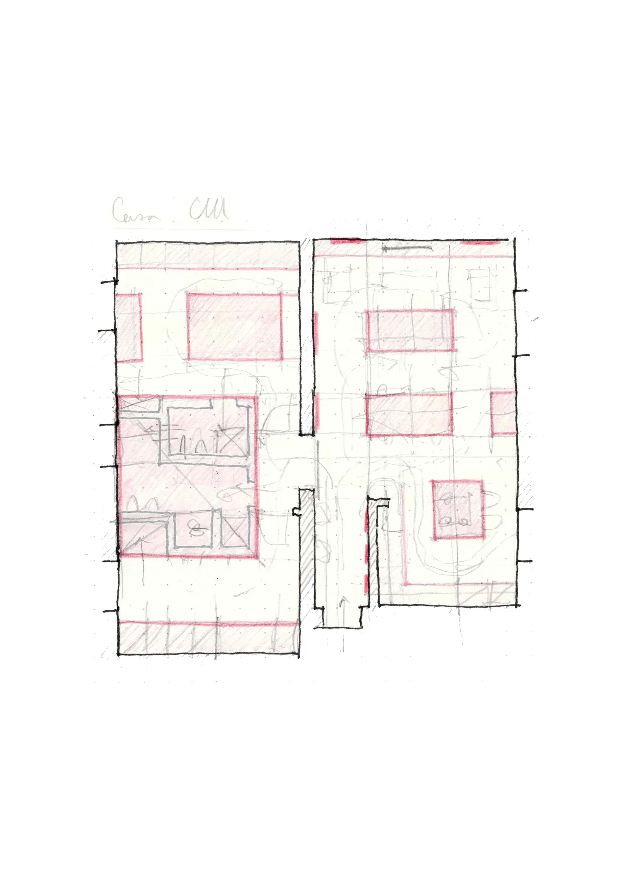

1 / 3
Casa CM
Apartment
Via Fusco, Modena, Italy
2022
Apartment
Via Fusco, Modena, Italy
2022
Samuele Silvestri
Architect
Via Asiago 58, 41125 Modena
info@samuelesilvestriarchitetto.com
+39 366 493 8286
Instagram Order of Architects of Modena, no. 1437 – section A
VAT no. IT04180440366 Privacy (in Italian)
Architect
Via Asiago 58, 41125 Modena
info@samuelesilvestriarchitetto.com
+39 366 493 8286
Instagram Order of Architects of Modena, no. 1437 – section A
VAT no. IT04180440366 Privacy (in Italian)


